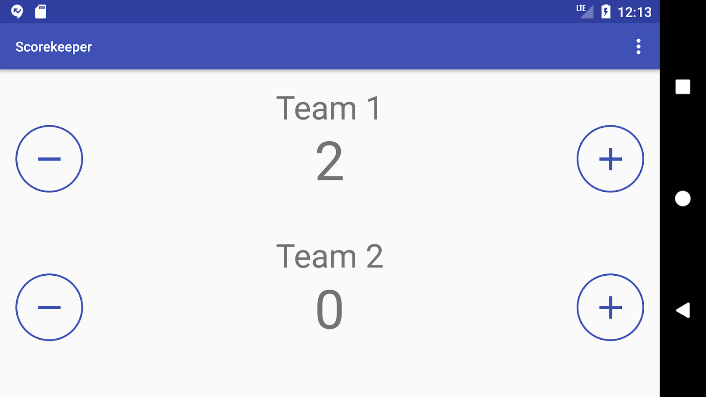

この実践的なコードラボは、Android Developer Fundamentals (Version 2) コースのUnit 2: User experience の一部です。コードラボを順番に学習していくことで、このコースを最大限に活用することができます。
注：このコースでは、"codelab"と"practical"という用語を入れ替えて使用しています。
序章
この章では、ビューに一般的なスタイルを適用し、描画可能なリソースを使用し、アプリにテーマを適用する方法を学びます。これらの実践により、コードを削減し、コードを読みやすく、メンテナンスしやすくなります。
すでに知っておくべきこと
できるようになるはずです。
Intent を使用して、あるアクティビティから別のアクティビティにデータを渡す。あなたが学ぶこと
あなたがすること
ButtonとTextViewの要素を追加します。Button 要素の背景として使用します。スコアキーパーアプリは、2つのボタン要素と2つのテキストビュー要素で構成されています。
このセクションでは、Android Studio プロジェクトを作成し、レイアウトを変更し、Button 要素に android:onClick 属性を追加します。
1.1 プロジェクトの作成
MainActivity）を受け入れ、［レイアウトファイルの生成］と［後方互換性（AppCompat）］オプションがチェックされていることを確認します。1.2 MainActivityのレイアウトを作成する
まず、ConstraintLayoutからLinearLayoutにレイアウトを変更します。
View階層の一番上、またはルートにあるのがConstraintLayout ViewGroupです。android.support.constraint.ConstraintLayoutViewGroup を LinearLayout に変更します。2 行目のコードは次のようになります。<LinearLayout xmlns:android="http://schemas.android.com/apk/res/android"ConstraintLayoutに関連するXMLコードの次の行を削除します。xmlns:app="http://schemas.android.com/apk/res-auto"上部のXMLコードのブロックは次のようになっているはずです。
<LinearLayout xmlns:android="http://schemas.android.com/apk/res/android"
xmlns:tools="http://schemas.android.com/tools"
android:layout_width="match_parent"
android:layout_height="match_parent"
tools:context="com.example.android.scorekeeper.MainActivity">属性 | 値 |
アンドロイド |
|
アンドロイド |
|
1.3 スコアコンテナを作成する
このアプリのレイアウトには、2 つの RelativeLayout ビューグループ要素で定義されたスコア コンテナが含まれています。次の図は、最もシンプルな形でのレイアウトを示しています。
LinearLayout 内に、以下の属性を持つ 2 つの RelativeLayout 要素を追加します。RelativeLayout属性 | 値 |
アンドロイド |
|
アンドロイド |
|
アンドロイド |
|
layout_height 属性が 0dp に設定されていることに驚くかもしれません。これは、layout_weight 属性を使用して、RelativeLayout 要素が親のLinearLayout でどのくらいのスペースを占有するかを決定しているからです。
各 RelativeLayout に 2 つの ImageButton 要素を追加します。これらの属性を使用します。ImageButton属性 | 値 |
アンドロイド |
|
アンドロイド |
|
アンドロイド |
|
|
|
|
|
|
|
スコアを増加させる 2 番目の ImageButton には、android:id として increaseTeam1 を使用します。3 番目と 4 番目の ImageButton 要素には decreaseTeam2 と increaseTeam2 を使用します。
ImageButton 要素の間の RelativeLayout に追加します。これらの属性を使用します。テキストビュー属性 | 値 |
アンドロイド |
|
アンドロイド |
|
アンドロイド |
|
|
|
|
|
アンドロイド |
|
imageButton要素の間にある2番目のTextViewのandroid:idとしてscore_2を使用します。
RelativeLayoutに、チーム名を表す別のTextViewを追加します。これらの属性を使用します。テキストビュー属性 | 値 |
アンドロイド |
|
アンドロイド |
|
|
|
|
|
アンドロイド |
|
2つ目のTextViewのandroid:textには"Team 2"を使用します。
1.4 ベクトルアセットの追加
スコアリングイメージボタン要素には、ベクターアセットスタジオのマテリアルアイコンを使用します。
ImageButton 要素のアイコンと コンテンツを追加できるようになりました。コンテンツは、Google TalkBack スクリーンリーダーなどの Android アクセシビリティ機能を必要とする可能性のあるユーザーに、ImageButton の意味と目的を説明する便利で説明的なラベルを提供します。
ImageButton要素に以下の属性を追加します。android:src="@drawable/ic_minus"
android:contentDescription="Minus Button"ImageButton要素に以下の属性を追加します。android:src="@drawable/ic_plus"
android:contentDescription="Plus Button".xml ファイルに格納されます。これにより、アプリをさまざまな言語に簡単にローカライズすることができます。レイアウトのためのソリューションコード
以下に Scorekeeper アプリのレイアウトとその XML コードを示します。
注意: 同じレイアウトを実現するには複数の方法があるため、あなたのコードは少し異なるかもしれません。
XMLコードです。
<LinearLayout xmlns:android="http://schemas.android.com/apk/res/android"
xmlns:tools="http://schemas.android.com/tools"
android:layout_width="match_parent"
android:layout_height="match_parent"
android:orientation="vertical"
android:padding="16dp"
tools:context="com.example.android.scorekeeper.MainActivity">
<RelativeLayout
android:layout_width="match_parent"
android:layout_height="0dp"
android:layout_weight="1">
<TextView
android:layout_width="wrap_content"
android:layout_height="wrap_content"
android:layout_alignParentTop="true"
android:layout_centerHorizontal="true"
android:text="@string/team_1" />
<ImageButton
android:id="@+id/decreaseTeam1"
android:layout_width="wrap_content"
android:layout_height="wrap_content"
android:layout_alignParentLeft="true"
android:layout_alignParentStart="true"
android:layout_centerVertical="true"
android:src="@drawable/ic_minus"
android:contentDescription=
"@string/minus_button_description" />
<TextView
android:id="@+id/score_1"
android:layout_width="wrap_content"
android:layout_height="wrap_content"
android:layout_centerHorizontal="true"
android:layout_centerVertical="true"
android:text="@string/initial_count" />
<ImageButton
android:id="@+id/increaseTeam1"
android:layout_width="wrap_content"
android:layout_height="wrap_content"
android:layout_alignParentEnd="true"
android:layout_alignParentRight="true"
android:layout_centerVertical="true"
android:src="@drawable/ic_plus"
android:contentDescription=
"@string/plus_button_description" />
</RelativeLayout>
<RelativeLayout
android:layout_width="match_parent"
android:layout_height="0dp"
android:layout_weight="1">
<TextView
android:layout_width="wrap_content"
android:layout_height="wrap_content"
android:layout_alignParentTop="true"
android:layout_centerHorizontal="true"
android:text="@string/team_2" />
<ImageButton
android:id="@+id/decreaseTeam2"
android:layout_width="wrap_content"
android:layout_height="wrap_content"
android:layout_alignParentLeft="true"
android:layout_alignParentStart="true"
android:layout_centerVertical="true"
android:src="@drawable/ic_minus"
android:contentDescription=
"@string/minus_button_description" />
<TextView
android:id="@+id/score_2"
android:layout_width="wrap_content"
android:layout_height="wrap_content"
android:layout_centerHorizontal="true"
android:layout_centerVertical="true"
android:text="@string/initial_count" />
<ImageButton
android:id="@+id/increaseTeam2"
android:layout_width="wrap_content"
android:layout_height="wrap_content"
android:layout_alignParentEnd="true"
android:layout_alignParentRight="true"
android:layout_centerVertical="true"
android:src="@drawable/ic_plus"
android:contentDescription=
"@string/plus_button_description" />
</RelativeLayout>
</LinearLayout>1.5 テキストビュー要素とスコアカウント変数を初期化する
スコアを追跡するために、アプリには2つのものが必要です。
MainActivityの各スコアTextView要素への参照で、スコアを更新できるようにします。以下の手順に従ってください。
// Member variables for holding the score
private int mScore1;
private int mScore2;// Member variables for holding the score
private TextView mScoreText1;
private TextView mScoreText2;MainActivityのonCreate()メソッドで、スコアのTextView要素をidで探して、メンバ変数に代入します。@Override
protected void onCreate(Bundle savedInstanceState) {
super.onCreate(savedInstanceState);
setContentView(R.layout.activity_main);
//Find the TextViews by ID
mScoreText1 = (TextView)findViewById(R.id.score_1);
mScoreText2 = (TextView)findViewById(R.id.score_2);
}1.6 ImageButton 要素のクリックハンドラの実装
各ImageButtonにandroid:onClick属性を追加し、MainActivityに2つのクリックハンドラメソッドを作成します。左のImageButton要素はTextViewのスコアを減少させ、右の要素はスコアを増加させます。
ImageButtonに以下のandroid:onClick属性を追加します。android:onClick="decreaseScore"decreaseScoreのメソッド名には赤で下線が引かれています。左マージンの赤い球根アイコンをクリックするか、メソッド名をクリックしてOption-Returnを押し、「MainActivity」の中の「Create 'decreaseScore(view)'」を選択します。Android Studioでは、MainActivityにdecreanceScore()メソッドのスタブが作成されます。ImageButtonに上記のandroid:onClick属性を追加します。今回は既にスタブが作成されているので、メソッド名は有効です。レイアウトの右側にある各ImageButtonに以下のandroid:onClick属性を追加します。android:onClick="increaseScore"increaseScore メソッド名には赤で下線が引かれています。左マージンの赤い球根アイコンをクリックするか、メソッド名をクリックしてOption-Returnを押し、「MainActivity」の中の「Create 'increaseScore(view)'」を選択します。Android Studioでは、MainActivityの中に increaseScore() メソッドのスタブが作成されます。view.getID() を使用して、クリックされたチームの ImageButton の ID を取得しているので、あなたのコードで適切なチームを更新することができます。increaseScore() と decreaseScore() のソリューションコード
/**
* Method that handles the onClick of both the decrement buttons
* @param view The button view that was clicked
*/
public void decreaseScore(View view) {
// Get the ID of the button that was clicked
int viewID = view.getId();
switch (viewID){
//If it was on Team 1
case R.id.decreaseTeam1:
//Decrement the score and update the TextView
mScore1--;
mScoreText1.setText(String.valueOf(mScore1));
break;
//If it was Team 2
case R.id.decreaseTeam2:
//Decrement the score and update the TextView
mScore2--;
mScoreText2.setText(String.valueOf(mScore2));
}
}
/**
* Method that handles the onClick of both the increment buttons
* @param view The button view that was clicked
*/
public void increaseScore(View view) {
//Get the ID of the button that was clicked
int viewID = view.getId();
switch (viewID){
//If it was on Team 1
case R.id.increaseTeam1:
//Increment the score and update the TextView
mScore1++;
mScoreText1.setText(String.valueOf(mScore1));
break;
//If it was Team 2
case R.id.increaseTeam2:
//Increment the score and update the TextView
mScore2++;
mScoreText2.setText(String.valueOf(mScore2));
}
}これで機能するスコアキーパーアプリが完成しました!しかし、レイアウトがくすんでいて、ImageButton要素の機能が伝わっていません。そこで、ボタンの背景を標準のグレーに変更することで、より分かりやすくすることができます。
Androidでは、グラフィックはDrawableと呼ばれるリソースによって処理されることが多いです。次のステップでは、ShapeDrawableと呼ばれるある種のDrawableを作成し、それを背景としてImageButton要素に適用する方法を学びます。
Drawablesの詳細については、Drawable resourcesを参照してください。
2.1 ShapeDrawableの作成
ShapeDrawableは、色、形状、パディングなどを含む多くの属性によってXMLファイルに定義されたプリミティブな幾何学的形状です。ベクトルグラフィックを定義し、定義を失うことなく拡大縮小することができます。
drawableフォルダ内にbutton_background.xmlというファイルを作成します。<?xml version="1.0" encoding="utf-8"?><shape
xmlns:android="http://schemas.android.com/apk/res/android"
android:shape="oval">
<stroke
android:width="2dp"
android:color="@color/colorPrimary"/>
</shape>2.2 ShapeDrawableを背景として適用する
ImageButton要素すべての背景としてDrawableを追加します。android:background="@drawable/button_background"すべてのデバイスでそれぞれの ImageButton を適切にレンダリングするために、各 ImageButton の android:layout_height と android:layout_width 属性を、ほとんどのデバイスでちょうど良いサイズの 70dp に変更します。最初のImageButtonの最初の属性を以下のように変更します。android:layout_width="70dp"70dp」を1回クリックし、Windowsの場合はAlt-Enter、macOSの場合はOption-Enterを押し、ポップアップメニューから次元リソースの抽出を選択します。dimens.xml ファイル (values フォルダ内) にディメンジョン・リソースが作成され、コード内のディメンジョンがリソースへの参照に置き換えられます。@dimen/button_size
新しいディメンション・リソースを使用して、各ImageButton要素のandroid:layout_heightおよびandroid:layout_width属性を変更します。android:layout_width="@dimen/button_size"
android:layout_height="@dimen/button_size"ImageButton要素にShapeDrawableを使用するようになりました。
レイアウトにビュー要素や属性を追加し続けると、コードが大きくなり、反復的になります。スタイルは、パディング、フォント色、フォントサイズ、背景色などの一般的なプロパティを指定することができます。高さ、幅、相対位置などのレイアウト指向の属性は、レイアウト・リソース・ファイルに残しておくべきです。
次のステップでは、スタイルを作成して複数のビュー要素やレイアウトに適用し、共通の属性を一箇所から同時に更新できるようにする方法を学びます。
メモ: スタイルは、ビューの外観を変更する属性のためのものです。高さ、重さ、相対的な位置などのレイアウトパラメータは、レイアウトファイルに残っていなければなりません。
3.1 ボタンスタイルの作成
Androidでは、スタイルは他のスタイルからプロパティを継承することができます。オプションの parent パラメータを使用してスタイルの親を宣言することができ、以下のプロパティを持っています。
例えば、スコアキーパーアプリの 4 つの ImageButton 要素はすべて共通の背景 Drawable を持ちますが、プラス(スコアを増やす)とマイナス(スコアを減らす)のアイコンは異なります。また、プラスの 2 つの ImageButton 要素は、マイナスの 2 つの ImageButton 要素と同じアイコンを共有しています。したがって、3つのスタイルを作成することができます。
ImageButton 要素のスタイルで、ImageButton のデフォルトのプロパティと描画可能な背景を含みます。ImageButton 要素のためのスタイル。このスタイルは ImageButton スタイルの属性を継承し、マイナスのアイコンを含みます。ImageButton 要素のためのスタイル。このスタイルは ImageButton スタイルを継承し、プラスアイコンを含みます。これらのスタイルは下の図のように表されています。
以下のようにしてください。
ここにすべてのスタイルコードが配置されます。AppTheme」スタイルは常に自動的に追加され、Theme.AppCompat.Light.DarkActionBarから拡張されていることがわかります。
<style name="AppTheme" parent="Theme.AppCompat.Light.DarkActionBar">parent 属性は、XML を使って親スタイルを指定する方法であることに注意してください。
name属性（この場合AppTheme）は、スタイルの名前を定義します。parent属性（この場合はTheme.AppCompat.Light.DarkActionBar）は、AppThemeが継承する親スタイル属性を宣言します。この例では、Androidのデフォルトテーマで、背景が明るく、アクションバーが暗いものとなっています。
テーマとは、単一のビューではなく、アクティビティやアプリ全体に適用されるスタイルのことです。テーマを使用すると、アクティビティやアプリ全体を通して一貫したスタイルが作成されます。例えば、アプリのすべての部分にあるアプリ バーの一貫したルック アンド フィールが作成されます。
<style name="ScoreButtons" parent="Widget.AppCompat.Button">
<item name="android:background">@drawable/button_background</item>
</style>上記のスニペットは、親スタイルをWidget.AppCompat.Buttonに設定し、Buttonのデフォルト属性を保持しています。また、Drawableの背景を前のタスクで作成したものに変更する属性を追加しています。
ScoreButtons スタイルを拡張して、プラスボタンのスタイルを作成します。<style name="PlusButtons" parent="ScoreButtons">
<item name="android:src">@drawable/ic_plus</item>
<item name=
"android:contentDescription">@string/plus_button_description</item>
</style>contentDescription属性は、視覚障害のあるユーザーのためのものです。これは、ある種のアクセシビリティ機器が、UI要素の意味について何らかの文脈を提供するために、声に出して読み上げるために使用するラベルとして機能します。
<style name="MinusButtons" parent="ScoreButtons">
<item name="android:src">@drawable/ic_minus</item>
<item name=
"android:contentDescription">@string/minus_button_description</item>
</style>ImageButton要素の特定のスタイル属性を置き換えることができるようになりました。MainActivity用のactivity_main.xmlレイアウトファイルを開き、マイナスのImageButton要素の両方の以下の属性を置き換えます。これらの属性を削除します。 | この属性を追加 |
アンドロイド |
|
| |
アンドロイド | |
注意: style属性はandroid:名前空間を使用しません。
ImageButton 要素の両方について、 以下の属性を置き換えます。これらの属性を削除します。 | この属性を追加 |
アンドロイド |
|
| |
アンドロイド | |
3.2 テキストビュースタイルの作成
チーム名とスコア表示のTextView要素は、共通の色とフォントを持っているので、スタイリングすることもできます。以下のようにしてください。
TextView要素に以下の属性を追加します。android:textAppearance="@style/TextAppearance.AppCompat.Headline"TextView属性の任意の場所を右クリック(またはControl-click)して、リファクタ > 抽出 > スタイル...を選択します。レイアウトとスタイルのソリューションコード
以下は、レイアウトとスタイルのコードスニペットです。
styles.xml:
<resources>
<!-- Base application theme. -->
<style name="AppTheme"
parent="Theme.AppCompat.Light.DarkActionBar">
<!-- Customize your theme here. -->
<item name="colorPrimary">@color/colorPrimary</item>
<item name="colorPrimaryDark">@color/colorPrimaryDark</item>
<item name="colorAccent">@color/colorAccent</item>
</style>
<style name="ScoreButtons" parent="AppTheme">
<item
name="android:background">@drawable/button_background</item>
</style>
<style name="PlusButtons" parent="ScoreButtons">
<item name="android:src">@drawable/ic_plus</item>
<item name=
"android:contentDescription">@string/plus_button_description</item>
</style>
<style name="MinusButtons" parent="ScoreButtons">
<item name="android:src">@drawable/ic_minus</item>
<item name=
"android:contentDescription">@string/minus_button_description</item>
</style>
<style name="ScoreText">
<item name= "android:textAppearance">@style/TextAppearance.AppCompat.Headline</item>
</style>
</resources>activity_main.xml:
<LinearLayout xmlns:android="http://schemas.android.com/apk/res/android"
xmlns:tools="http://schemas.android.com/tools"
android:layout_width="match_parent"
android:layout_height="match_parent"
android:orientation="vertical"
android:padding="16dp"
tools:context="com.example.android.scorekeeper.MainActivity">
<RelativeLayout
android:layout_width="match_parent"
android:layout_height="0dp"
android:layout_weight="1">
<TextView
android:layout_width="wrap_content"
android:layout_height="wrap_content"
android:layout_alignParentTop="true"
android:layout_centerHorizontal="true"
android:text="@string/team_1"
style="@style/ScoreText" />
<ImageButton
android:id="@+id/decreaseTeam1"
android:layout_width="@dimen/button_size"
android:layout_height="@dimen/button_size"
android:layout_alignParentLeft="true"
android:layout_alignParentStart="true"
android:layout_centerVertical="true"
style="@style/MinusButtons"
android:onClick="decreaseScore"/>
<TextView
android:id="@+id/score_1"
android:layout_width="wrap_content"
android:layout_height="wrap_content"
android:layout_centerHorizontal="true"
android:layout_centerVertical="true"
android:text="@string/initial_count"
style="@style/ScoreText" />
<ImageButton
android:id="@+id/increaseTeam1"
android:layout_width="@dimen/button_size"
android:layout_height="@dimen/button_size"
android:layout_alignParentEnd="true"
android:layout_alignParentRight="true"
android:layout_centerVertical="true"
style="@style/PlusButtons"
android:onClick="increaseScore"/>
</RelativeLayout>
<RelativeLayout
android:layout_width="match_parent"
android:layout_height="0dp"
android:layout_weight="1">
<TextView
android:layout_width="wrap_content"
android:layout_height="wrap_content"
android:layout_alignParentTop="true"
android:layout_centerHorizontal="true"
android:text="@string/team_2"
style="@style/ScoreText" />
<ImageButton
android:id="@+id/decreaseTeam2"
android:layout_width="@dimen/button_size"
android:layout_height="@dimen/button_size"
android:layout_alignParentLeft="true"
android:layout_alignParentStart="true"
android:layout_centerVertical="true"
style="@style/MinusButtons"
android:onClick="decreaseScore"/>
<TextView
android:id="@+id/score_2"
android:layout_width="wrap_content"
android:layout_height="wrap_content"
android:layout_centerHorizontal="true"
android:layout_centerVertical="true"
android:text="@string/initial_count"
style="@style/ScoreText" />
<ImageButton
android:id="@+id/increaseTeam2"
android:layout_width="@dimen/button_size"
android:layout_height="@dimen/button_size"
android:layout_alignParentEnd="true"
android:layout_alignParentRight="true"
android:layout_centerVertical="true"
style="@style/PlusButtons"
android:onClick="increaseScore"/>
</RelativeLayout>
</LinearLayout>3.3 スタイルの更新
同じスタイルの複数の要素に変更を加えたい場合、スタイルを使用することの威力が明らかになります。テキストを大きくしたり、大胆にしたり、明るくしたり、アイコンをボタンの背景色に変更したりすることができます。
スタイル | 項目 |
スコアボタン |
|
スコアテキスト |
|
colorPrimaryの値は、プロジェクトの作成時にAndroid Studioによって自動的に生成されます。この値は、プロジェクト > Android ペインの values フォルダ内の colors.xml ファイル内にあります。TextAppearance.AppCompat.Display3属性は、Androidが提供する事前定義のテキストスタイルです。
textAppearance属性を設定したTeamTextという新しいスタイルを作成します。<style name="TeamText">
<item name=
"android:textAppearance">@style/TextAppearance.AppCompat.Display1
</item>
</style>TextViewチーム名要素のstyle属性を新しく作成したTeamTextスタイルに変更します。style="@style/TeamText" style.xml ファイルへのこれらの調整だけで、すべてのビューが変更を反映するように更新されました。似たような特性を持つView要素をstyles.xmlファイルで一緒にスタイリングできることを見てきました。しかし、アクティビティ全体、またはアプリ全体のスタイルを定義したい場合はどうでしょうか？テーマを使用することで、これを達成することができます。アクティビティごとにテーマを設定するには、AndroidManifest.xmlファイルを修正する必要があります。
このタスクでは、アプリに「ナイトモード」のテーマを追加し、ユーザーが夜間に目にやさしい低コントラストバージョンのアプリを使用できるようにしたり、UIにいくつかの磨きをかけたりします。
4.1 テーマを探る
ファイルを開き、タグを見つけ、android:theme属性を変更します。 android:theme="@style/Theme.AppCompat.Light.NoActionBar" This is a predefined theme that removes the action bar from your activity.アプリのテーマをAppThemeに変更します。これは、styles.xmlで見ることができるように、Theme.Appcompat.Light.DarkActionBarテーマの子です。テーマをアプリケーション全体ではなくアクティビティに適用するには、<application>タグの代わりに
4.2 メニューにテーマボタンを追加する
アプリにテーマを設定するための1つの用途は、夜間のブラウジングに代替の視覚体験を提供することです。このような状況では、低コントラストで暗いレイアウトの方が良いことが多いです。Androidフレームワークは、まさにこのために設計されたテーマを提供しています。DayNightテーマです。
このテーマには、あなたのアプリの色をプログラムで制御できるオプションが組み込まれています：時間によって自動的に変更するように設定するか、またはユーザーコマンドによって。
このステップでは、通常のテーマと「ナイトモード」テーマの間でアプリを切り替えるオプションメニュー項目を追加します。
<string name="night_mode">Night Mode</string>
<string name="day_mode">Day Mode</string>menu.xmlファイルのレイアウトエディタが表示されます。<item
android:id="@+id/night_mode"
android:title="@string/night_mode"/>をクリックします。Android Studioは、return super.onCreateOptionsMenu(menu)を唯一のステートメントとするonCreateOptionsMenu()メソッドのスタブを作成します。return.super ステートメントの直前の onCreateOptionsMenu() で、メニューを膨らませるコードを追加します。getMenuInflater().inflate(R.menu.main_menu, menu);4.3 メニューからテーマを変更する
DayNightテーマは、AppCompatDelegateクラスを使用して、アクティビティのナイトモードオプションを設定します。このテーマの詳細については、このブログ記事を参照してください。
AppThemeの親を「Theme.AppCompat.DayNight.DarkActionBar」に変更します。MainActivityのonOptionsItemSelected()メソッドをオーバーライドし、どのメニュー項目がクリックされたかを確認するコードを追加します。@Override
public boolean onOptionsItemSelected(MenuItem item) {
//Check if the correct item was clicked
if(item.getItemId()==R.id.night_mode){}
// TODO: Get the night mode state of the app.
return true;
}TODO:コメントを、ナイトモードが有効になっているかどうかをチェックするコードで置き換えてください。有効になっている場合、このコードはナイトモードを無効な状態に変更し、そうでない場合はナイトモードを有効にします。if(item.getItemId()==R.id.night_mode){
// Get the night mode state of the app.
int nightMode = AppCompatDelegate.getDefaultNightMode();
//Set the theme mode for the restarted activity
if (nightMode == AppCompatDelegate.MODE_NIGHT_YES) {
AppCompatDelegate.setDefaultNightMode
(AppCompatDelegate.MODE_NIGHT_NO);
} else {
AppCompatDelegate.setDefaultNightMode
(AppCompatDelegate.MODE_NIGHT_YES);
}
// Recreate the activity for the theme change to take effect.
recreate();メニュー項目のクリックに応答して、コードは AppCompatDelegate.getDefaultNightMode() を呼び出すことで、現在のナイトモード設定を検証します。
テーマはアクティビティが作成されている間にしか変更できないので、コードはテーマの変更を有効にするためにrecreate()を呼び出します。
onCreateOptionsMenu() メソッドの return super.onCreateOptionsMenu(menu) 文を以下のコードに置き換えます。// Change the label of the menu based on the state of the app.
int nightMode = AppCompatDelegate.getDefaultNightMode();
if(nightMode == AppCompatDelegate.MODE_NIGHT_YES){
menu.findItem(R.id.night_mode).setTitle(R.string.day_mode);
} else{
menu.findItem(R.id.night_mode).setTitle(R.string.night_mode);
}
return true;4.4 SaveInstanceState
前回のレッスンでは、画面を回転させたときなど、予期せぬタイミングでアクティビティが破棄されたり、再作成されたりすることを想定しておく必要があることを学びました。このアプリでは、デバイスを回転させると、スコアを含むTextView要素が初期値の0にリセットされます。これを修正するには、以下の手順を実行します。
MainActivityを開き、onSaveInstanceState()のキーとして使用されるメンバー変数の下にタグを追加します。static final String STATE_SCORE_1 = "Team 1 Score";
static final String STATE_SCORE_2 = "Team 2 Score";MainActivityの最後に、onSaveInstanceState()メソッドをオーバーライドして、2つのスコアTextView要素の値を保持します。@Override
protected void onSaveInstanceState(Bundle outState) {
// Save the scores.
outState.putInt(STATE_SCORE_1, mScore1);
outState.putInt(STATE_SCORE_2, mScore2);
super.onSaveInstanceState(outState);
}onCreate()メソッドの最後に、savedInstanceStateがあるかどうかをチェックするコードを追加します。もしあれば、スコアをTextView要素に復元します。if (savedInstanceState != null) {
mScore1 = savedInstanceState.getInt(STATE_SCORE_1);
mScore2 = savedInstanceState.getInt(STATE_SCORE_2);
//Set the score text views
mScoreText1.setText(String.valueOf(mScore1));
mScoreText2.setText(String.valueOf(mScore2));
}
これで完了です。ユーザーがデバイスの向きを水平または垂直に変更しても動作するスタイルのスコアキーパーアプリが完成しました。
Android Studio プロジェクト。スコアキーパー
注: コーディングの課題はすべて任意であり、後のレッスンの前提条件ではありません。
チャレンジしてみてください。今のところ、ボタンは押されても見た目が変わらないので、直感的には動作しません。Android にはStateListDrawable と呼ばれる別のタイプの Drawable があり、オブジェクトの状態に応じて異なるグラフィックを使用することができます。
今回の課題問題では、ImageButtonの状態が「押された」ときに、ImageButtonの背景をボーダーと同じ色に変更するDrawableリソースを作成してください。また、ImageButton要素内のテキストの色を、ボタンが「押された」ときに白になるようなセレクタに設定しておくとよいでしょう。
ShapeDrawableは、XMLファイルで定義されたプリミティブな幾何学的形状です。ShapeDrawable を定義する属性には、色、形状、パディングなどがあります。AndroidManifest.xmlファイルで定義する必要があります。android:theme属性を使用します。関連するコンセプトのドキュメントは5.1にあります。Drawables, styles, and themes にあります。
Android Studioのドキュメント。
Androidの開発者向けドキュメント。
マテリアルデザイン。
Android開発者ブログ。Androidデザインサポートライブラリ
他にもあります。
This section lists possible homework assignments for students who are working through this codelab as part of a course led by an instructor. It's up to the instructor to do the following:
Instructors can use these suggestions as little or as much as they want, and should feel free to assign any other homework they feel is appropriate.
If you're working through this codelab on your own, feel free to use these homework assignments to test your knowledge.
Create an app that displays an ImageView and plus and minus buttons, as shown below. The ImageView contains a level list drawable that is a battery level indicator. Tapping the plus or minus button changes the level of the indicator.
Use the battery icons from the Vector Asset Studio to represent 7 different values for the battery level.
The app should have the following properties:
Which type of Drawable do you use to create a Button with a background that stretches properly to accommodate the text or image inside the Button so that it looks correct for different screen sizes and orientations? Choose one:
LevelListDrawableTransitionDrawableStateListDrawableNinePatchDrawableWhich type of Drawable do you use to create a Button that shows one background when it is pressed and a different background when it is hovered over? Choose one:
LevelListDrawableTransitionDrawableStateListDrawableNinePatchDrawableSuppose you want to create an app that has a white background, dark text, and a dark action bar. Which base style does your application style inherit from? Choose one:
Theme.AppCompat.LightTheme.AppCompat.Dark.NoActionBarTheme.AppCompat.Light.DarkActionBarTheme.AppCompat.NoActionBarTheme.NoActionBarCheck that the app has the following features:
ImageView, using the setImageLevel() method.LevelListDrawable go from 0 to 6.onClick() methods check to see whether the count variable is within the range of the LevelListDrawable (0 to 6). This way, the user can't set a level that doesn't exist.To find the next practical codelab in the Android Developer Fundamentals (V2) course, see Codelabs for Android Developer Fundamentals (V2).
For an overview of the course, including links to the concept chapters, apps, and slides, see Android Developer Fundamentals (Version 2).